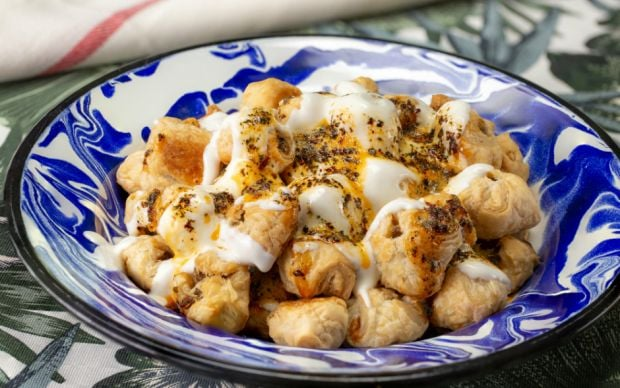

|  | Çıtır Çıtır Lezzet: Milföy Mantı |
| Hamur kıvamı tutturmaya uğraşmadan ve hatta oklavayı elinize dahi almadan, çıtır çıtır ve enfes bir mantı yapabilirsiniz artık. Milföy hamurunun pratikliği ve pişince çıtır çıtır olan dokusu, 7'den 70'e bayılarak yediğimiz geleneksel lezzetimiz mantı'ya çok güzel bir katkı yapacak. İç harcını da hazırlaması aşırı kolay olan bu enfes tarif, kendinizi şımartmak için de, sevdiklerinizi büyülemek için de harika bir tercih olacak. |